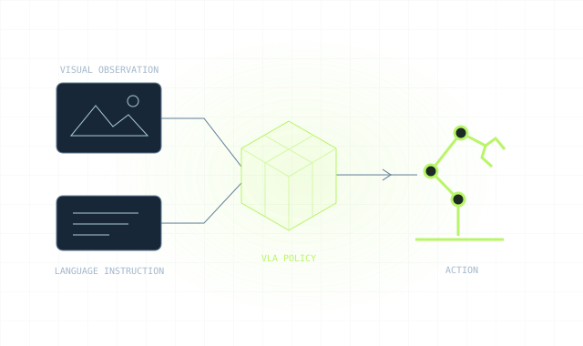
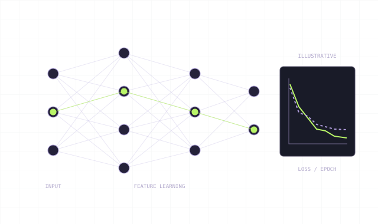

环境感知与表征
视觉特征提取、多传感器融合与空间表征，让模型理解周围环境。
你好，我是 zongyunfwx。
关注自动驾驶、具身智能与机器人导航，
探索从环境感知到自主决策的完整链路。

我关注 AI 算法如何在复杂的物理环境中发挥作用：从视觉感知与场景表征，到多模态理解、轨迹规划和机器人控制。
这里记录我的技术探索与项目思路。希望用清晰的问题定义、可复现的实验和完整的工程实践，逐步连接模型能力与实际任务。
查看研究与实践方向 ↗围绕智能系统的四个核心环节展开探索。
视觉特征提取、多传感器融合与空间表征，让模型理解周围环境。
探索视觉、语言与动作的对齐，让任务意图转化为可执行的行动。
连接定位建图、路径搜索和局部避障，关注动态环境下的决策。
重视数据质量、实验对比和推理效率，让每一次模型迭代有据可循。
以上为关注与学习方向；具体技术实践以项目记录为准。
四个项目方向，串联感知、理解与行动。
当前展示为项目方向与方案草稿，代码、实验结果及演示材料待补充。
PERCEPTION → PLANNING → CONTROL从多视角视觉表征到未来轨迹预测，探索感知与规划的联合建模。

SEE. UNDERSTAND. ACT.融合视觉观察与自然语言指令，探索面向机器人操作的动作生成。
结合空间建图、全局路径规划与局部避障，连接环境理解和自主移动。

DATA → MODEL → EVALUATION围绕可复现训练、误差分析与推理优化，搭建完整的视觉实验流程。
欢迎交流自动驾驶、具身智能和机器人相关的技术想法。